1. Introduction
1.1 Purpose of the Report
This report provides a clear, data-backed overview of the state of decentralized finance in 2025. Its purpose is to highlight the major trends that shaped the year, analyze what went right and what went wrong across the ecosystem, and evaluate how capital, users, and protocols behaved throughout the period. The goal is to give an honest, concise picture of DeFi's performance, challenges, and progress, supported by factual data and insights.
1.2 Methodology & Data Sources
All quantitative metrics - including TVL, inflows/outflows, category performance, stablecoin supply, and protocol activity are sourced primarily from DefiLlama. Additional context is drawn from:
- Dune Analytics (user activity, airdrop behavior, L2 tracking)
- Token Terminal (protocol revenue and fees)
- L2Beat (rollup adoption and security models)
- Public audit reports, governance proposals, and incident write-ups
Where data varies between sources, DefiLlama serves as the baseline for consistency.
1.3 Scope of Analysis
The report covers DeFi across major ecosystems including Ethereum, Solana and leading L2s (Base, Arbitrum, Polygon, etc.) with notable activity. It focuses on:
- Monthly capital flows and liquidity rotations
- Institutional and large-holder behavior
- Performance across lending, DEXes, yield products, perps, LRTs, RWAs, and stablecoins
- Major events, upgrades, incentives, hacks, and failures
- Trends that strengthened the ecosystem and issues that held it back
The timeframe spans December 2024 to December 2025 YTD.
2. Macro Environment & Market Context
2.1 Crypto Market Backdrop
2025 continued the bull cycle that began in late 2023, driven by strong institutional participation and expanding regulated market access. Three catalysts dominated:
- ETF Expansion: BTC and ETH ETFs scaled globally, attracting consistent inflows from traditional asset managers.
- Solana ETF Launch: The approval of Solana ETFs in Q4 2025 unlocked new institutional demand.
- XRP Futures Catalyst: XRP surged following the launch of CME futures, reviving large-cap liquidity.
2.2 Interest Rate Environment & Liquidity Cycles
Global liquidity improved as interest rates stabilized. Two regulatory tailwinds:
- MiCA Regulation: Euro-denominated stablecoin supply roughly doubled.
- US Regulatory Shift: Reduced enforcement pressure lowered perceived legal risk.
2.3 Stablecoin Supply Trends
Market Expansion:
- Market cap grew from $199.6B → $308.6B (+$108.9B)
- Circulating supply expanded from $205.2B → $350.1B
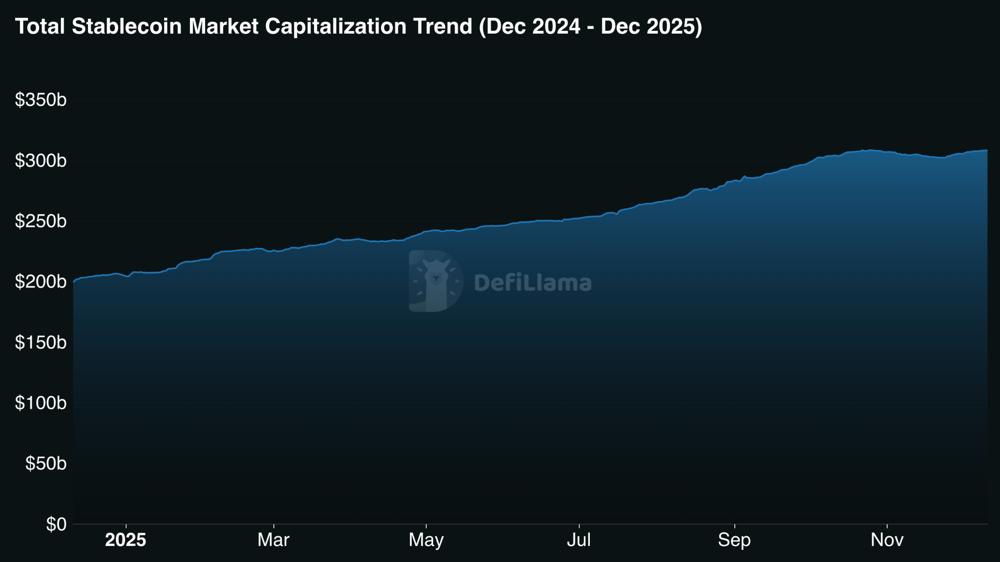
Shift Toward Yield-Bearing Stablecoins:
- Capital in stablecoin yield strategies rose from $14.0B → $55.6B (+396%)
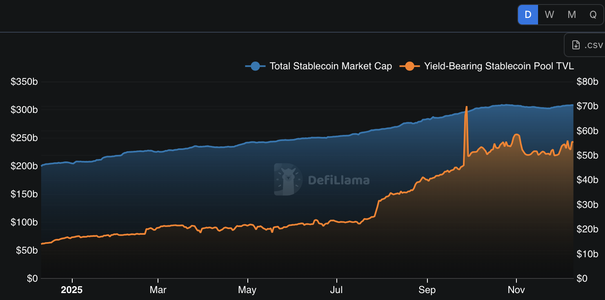
Multi-Chain Fragmentation:
- Chains hosting stablecoins increased from 103 → 142
- Growth concentrated on Base, Hyperliquid, Avalanche
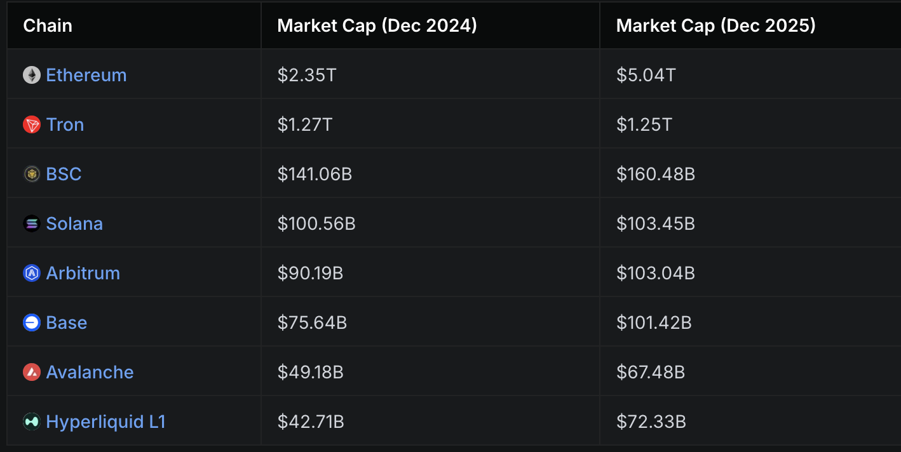
2.4 L1 → L2 Migration & Blockspace Economics
Two major upgrades: Pectra (May 2025) and Fusaka (Dec 2025).
- Value Secured in Rollups: Down –20.6% YoY
- Activity (UOPS): Transaction activity accelerated sharply in late 2025
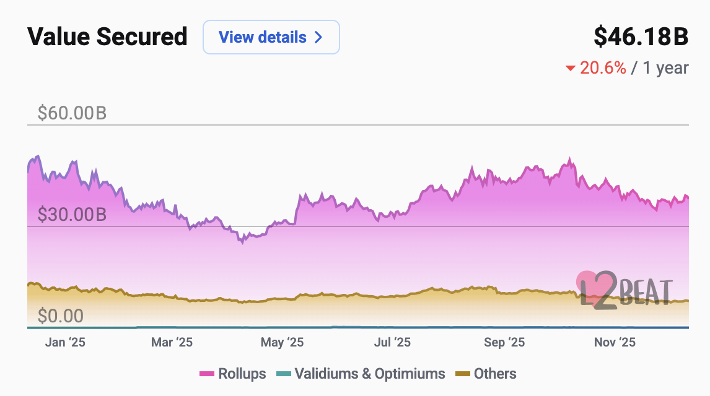
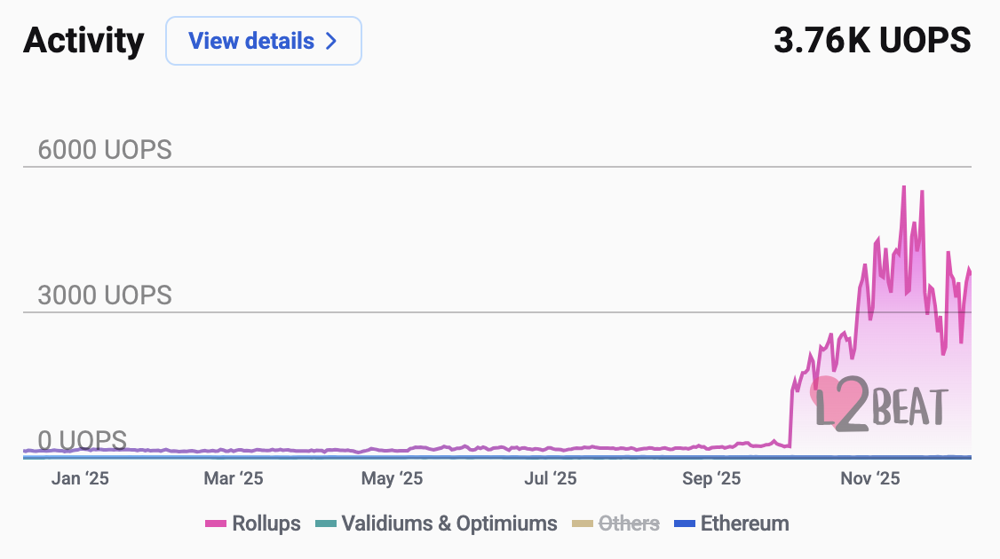
3. DeFi Performance Overview
3.1 Total Value Locked (TVL)
Yearly Snapshot:
- Start (Dec 2024): $37.35B
- Peak (Oct 7, 2025): $62.43B
- End (Dec 2025): $46.30B
- Net change: +24% YoY
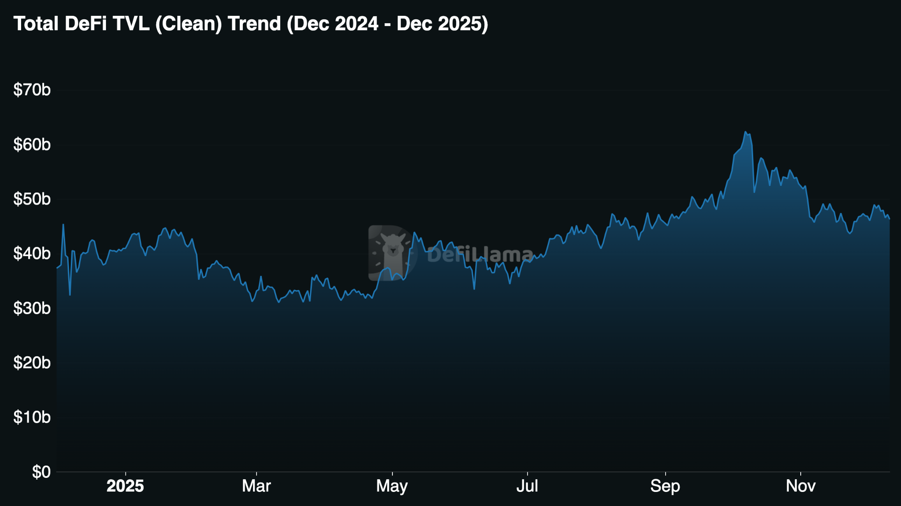
Category-level breakdown:
| Category | Current TVL | Dec 2024 TVL | Change (%) |
|---|---|---|---|
| Lending | $65.27B | $48.58B | +34.36% |
| Liquid Staking | $61.62B | $66.15B | -6.84% |
| Bridge | $49.68B | $40.84B | +21.63% |
| Restaking | $19.71B | $23.66B | -16.70% |
| DEXs | $17.76B | $23.79B | -25.36% |
| RWA | $16.43B | $5.20B | +215.67% |
| Canonical Bridge | $14.93B | $670.20M | +2,128.32% |
| Liquid Restaking | $11.64B | $16.73B | -30.43% |
| Basis Trading | $11.24B | $5.81B | +93.54% |
| CDP | $9.57B | $11.78B | -18.71% |
| Yield | $8.97B | $7.89B | +13.60% |
| Risk Curators | $6.05B | $1.22B | +396.11% |
| Derivatives | $3.91B | $4.95B | -21.03% |
| Farm | $1.23B | $5.67B | -78.37% |
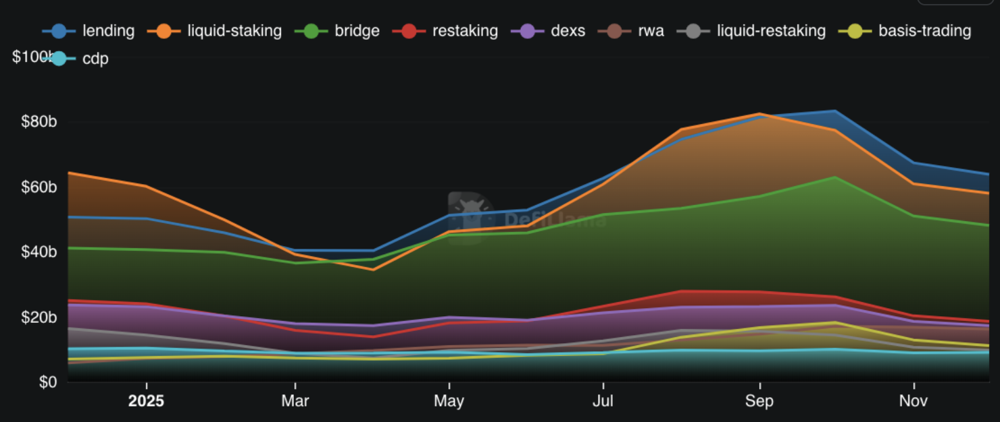
3.2 User Activity & Protocol Usage
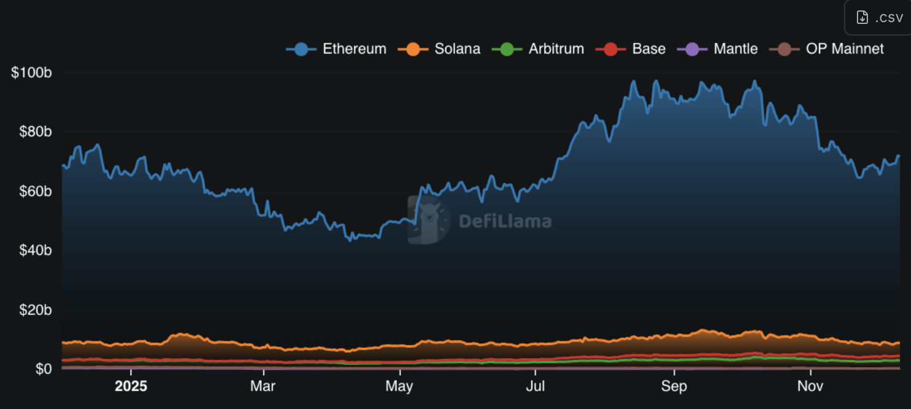
Monthly active users:
- Peak: May (385.1M) and June (387.4M)
- February dip: 306.4M
- December 2025 (partial): 127.8M
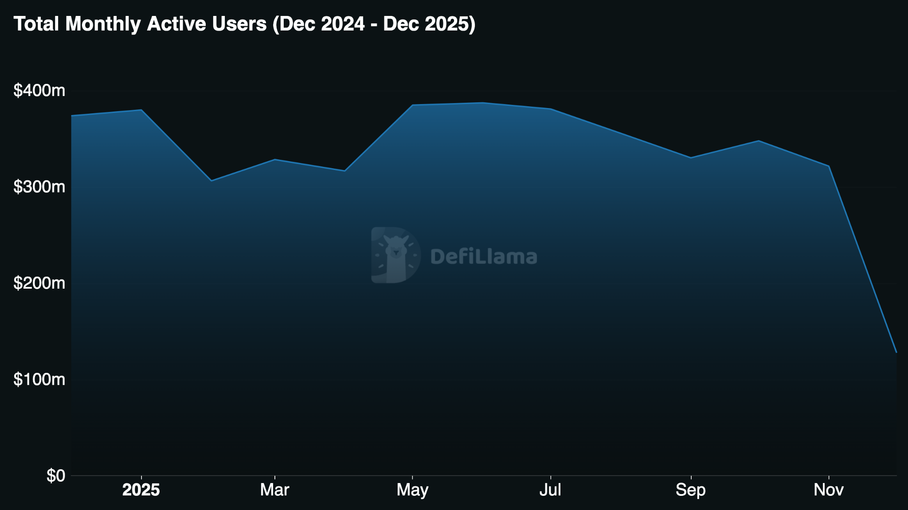
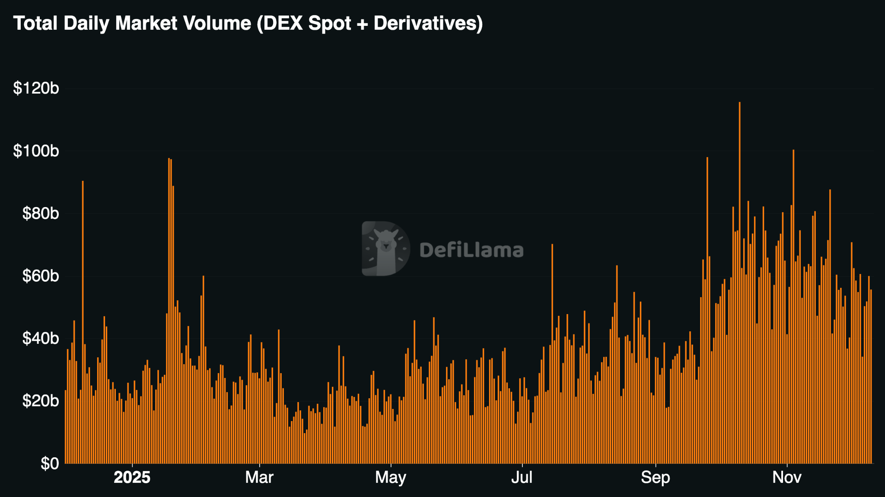
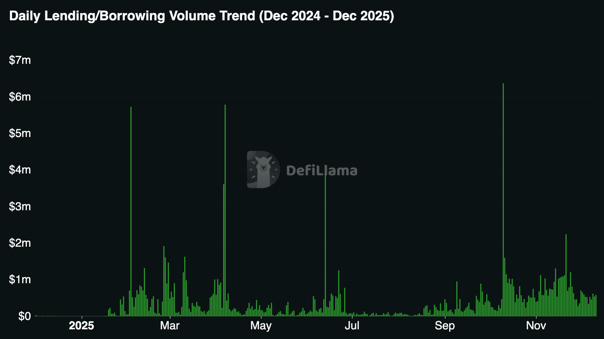
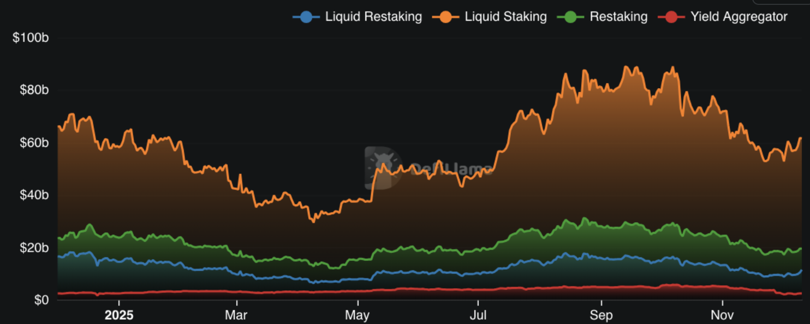
3.3 Capital Flow Analysis
Monthly flows:
| Month | Net Flow (USD) | Trend |
|---|---|---|
| Dec 2024 | -$3.49B | Outflow |
| Jan 2025 | +$4.86B | Inflow |
| Feb | -$25.09B | Major Outflow |
| Mar | -$6.42B | Outflow |
| Apr | +$6.73B | Inflow |
| May | +$13.87B | Strong Inflow |
| Jun | +$706.9M | Inflow |
| Jul | +$28.25B | Peak Inflow |
| Aug | +$12.69B | Strong Inflow |
| Sep | +$4.69B | Inflow |
| Oct | -$7.92B | Outflow |
| Nov | -$30.08B | Peak Outflow |
| Dec 2025 | +$4.65B | Inflow |
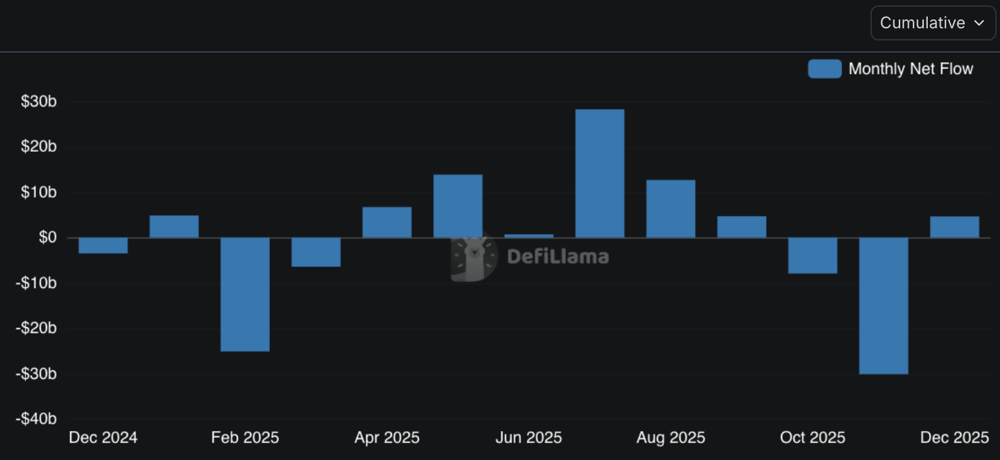
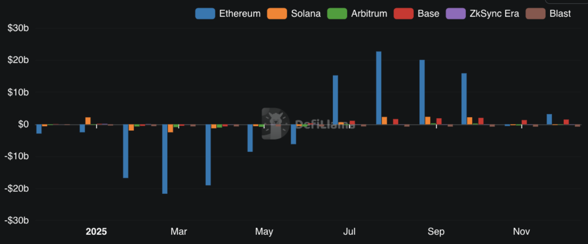
Top Protocols by Net Inflows:
| Protocol | Current TVL | Net Flow | Sector |
|---|---|---|---|
| Aave | $33.77B | +$13.44B | Lending |
| Binance Staked ETH | $11.79B | +$5.39B | Liquid Staking |
| Arbitrum Bridge | $4.58B | +$4.58B | Bridge |
| Base Bridge | $3.60B | +$3.60B | Bridge |
| Morpho | $5.89B | +$3.33B | Lending |
| Spark | $7.45B | +$2.86B | Lending |
| Babylon Protocol | $5.14B | +$2.84B | Liquid Staking |
| Maple Finance | $2.82B | +$2.50B | Lending |
| Ethena | $6.76B | +$2.32B | Stablecoin/Yield |
| TriggerX | $2.13B | +$2.13B | Yield |
4. Sustainable Yield, Automated Yield Products & DeFAI
4.1 Sustainable Yield
- Real Yield Dominance: Rewards from real activity—lending interest, trading fees, RWAs
- Yield Compression: Stablecoin/LST yields normalized to 3–8% APY
- Rise of LRTs: Stacking staking yield, AVS rewards, and lending income
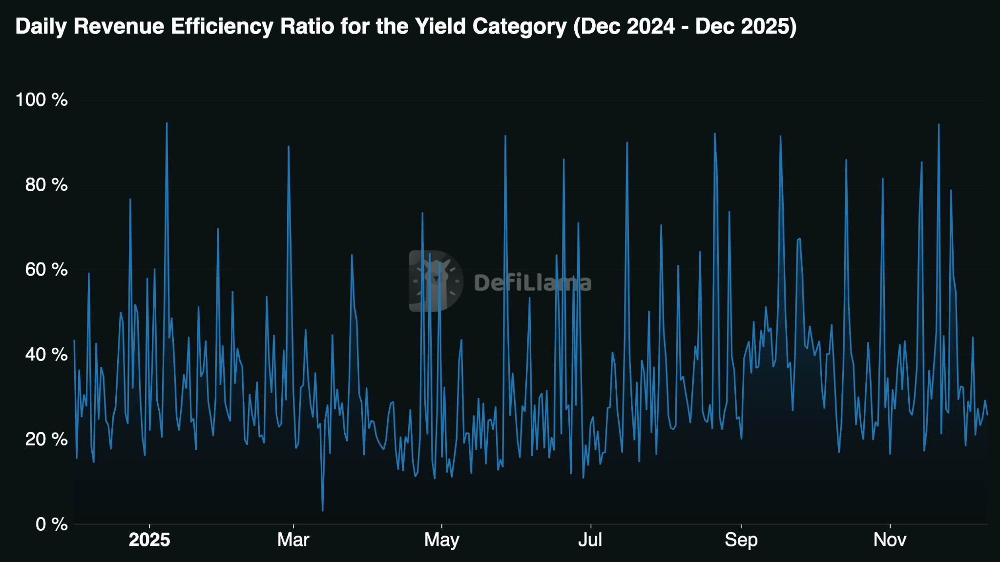
4.2 Automated Yield Products
- AI-Assisted Rebalancing
- Auto-Compounders as Base Layer (Yearn, Beefy)
- Structured Strategies: restaking vaults, options vaults, RWA fixed-income vaults
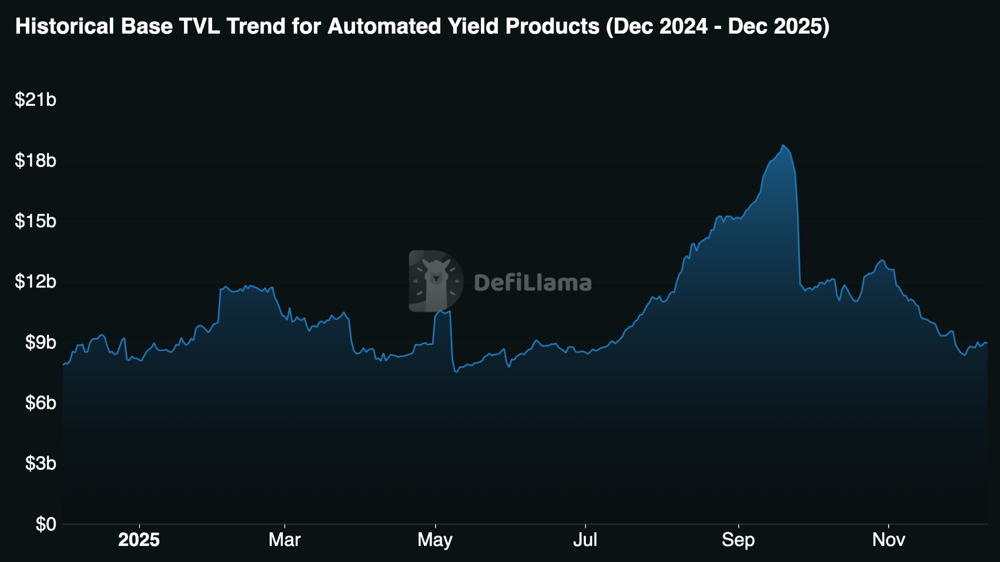
4.3 DeFAI
- Base TVL fell 70% ($215.9M → $64.0M)
- Staking TVL grew 1,515%
- Protocol count doubled (8 → 16)
- Market cap peaked at $4.81B in early Jan, corrected to $633M
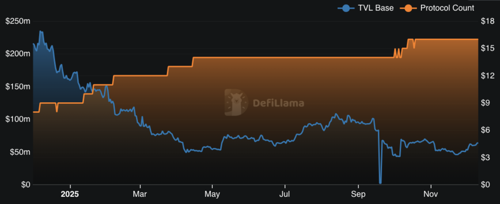
5. Sector Deep Dives
5.1 Lending & Money Markets
- Supply TVL: $48.6B → $65.1B (+33.9%)
- Borrowed TVL: $25.8B → $39.9B (+54.6%)
- Peak TVL: $74.3B (Oct 10, 2025)
- Aave expanded share from 41.8% → 51.7%
- Morpho grew from 5.3% → 9.1%
- Euler rebounded from 0.1% → 1.6%
- Largest outflow: Aave –$5.85B (Oct 11, 2025)
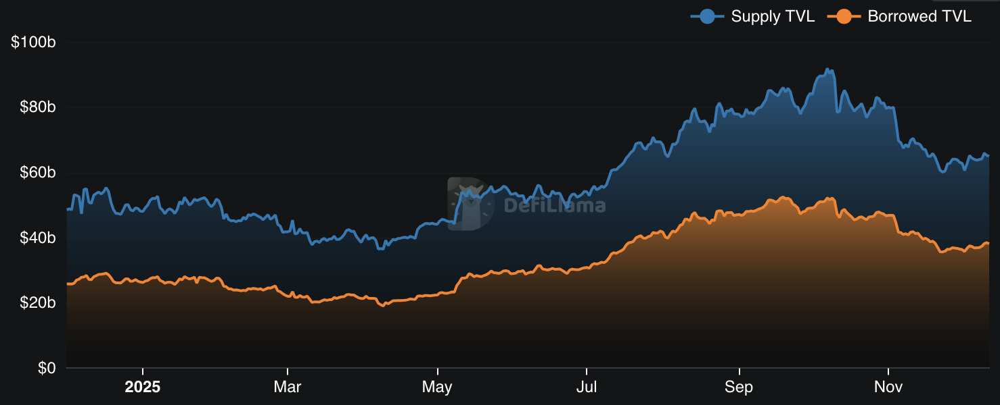
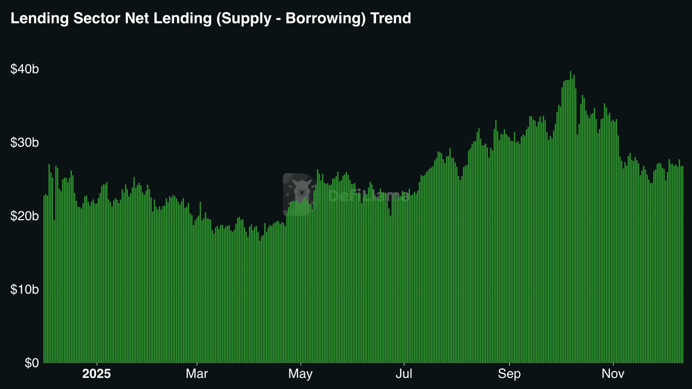
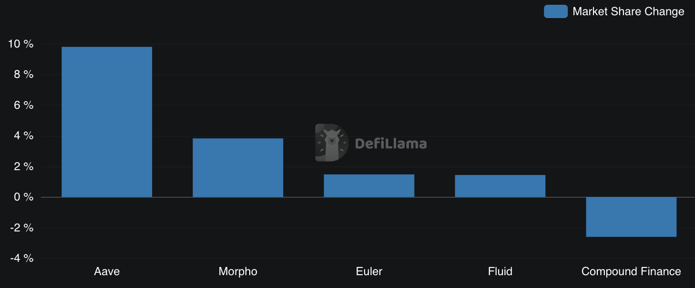
5.2 Yield Aggregators & Automated Vaults
- TVL: $7.89B → $9.01B (+14.2%)
- Peak TVL: ~$18.8B (Sept 2025)
- Pendle became dominant yield infrastructure ($3.74B TVL)
| Protocol | TVL | 30d Change | Fees (30d) | P/F |
|---|---|---|---|---|
| Spark Savings | $1.98B | +26.3% | N/A | N/A |
| Convex | $970M | –5.7% | $2.58M | 5.39 |
| Yearn | $764M | –1.1% | $1.86M | 4.32 |
| Beefy | $472M | +11.9% | $1.29M | 18.23 |
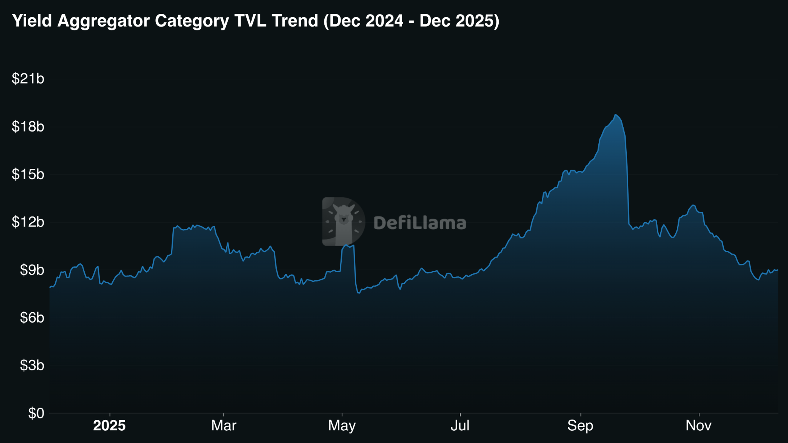
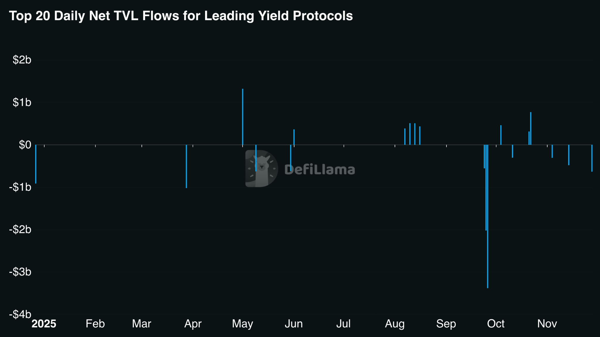
5.3 DEX Ecosystem (Spot + Perps)
- Perp DEXs overtook spot DEXs as primary trading venue
- Perp-to-spot volume ratio approached 10:1
- Hyperliquid: $7.42B open interest, $92.5M in 30-day fees
- October 2025 flash crash: ~$19.35B in liquidations
- Solana → spot execution hub, Ethereum + L2s → leveraged trading hub
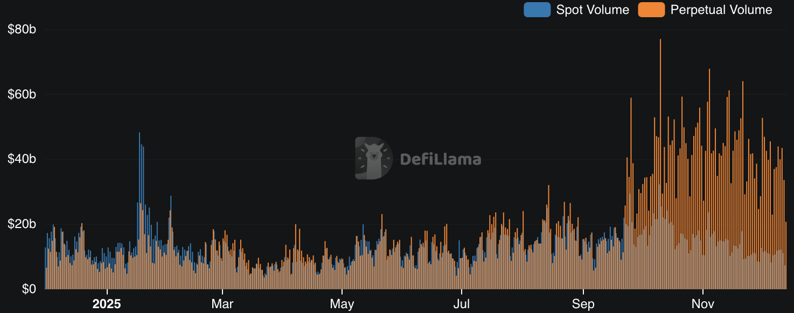
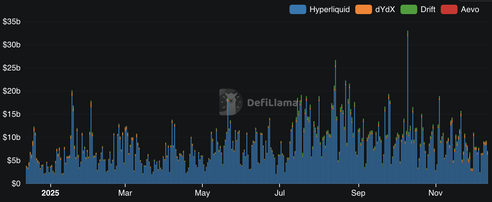
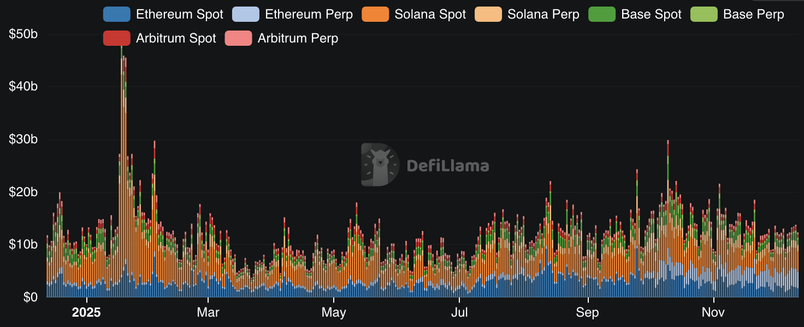
5.4 LST & LRT Markets
- LSTs: ~$69.3B peak TVL, ~79% market share
- LRTs: ~$17.9B peak TVL, ~21% market share
- Lido dominant with $27.36B TVL
- Ether.fi led LRT category (+7.95% in 30 days)
| Protocol | Category | TVL | 30d Change | Fees (Ann.) | P/F |
|---|---|---|---|---|---|
| Lido | LST | $27.36B | -0.77% | $752.01M | 0.704 |
| Binance Staked ETH | LST | $11.06B | -2.65% | $297.86M | - |
| Ether.fi | LRT | $8.28B | +7.95% | - | - |
| Jito | LST | $1.87B | -9.21% | $111.42M | 1.445 |
| Rocket Pool | LST | $1.86B | -5.41% | $46.07M | 1.034 |
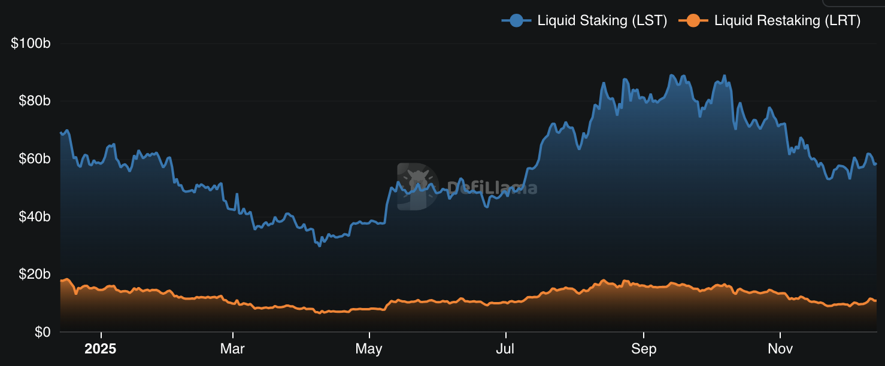
5.5 RWAs
- Current RWA TVL: $16.47B
- Peak TVL: $18.05B (Nov 2025)
- YoY Growth: Nearly 3×
- Tokenized U.S. Treasuries reached $7.4–8.0B (+256% YoY)
| Protocol | Sub Protocol | TVL | 30d Change |
|---|---|---|---|
| Tether Gold | tether-gold | $2.27B | +4.49% |
| Securitize | blackrock-buidl | $2.08B | -18.00% |
| Ondo Finance | ondo-yield-assets | $1.52B | +3.45% |
| Paxos Gold | paxos-gold | $1.47B | +5.91% |
| Circle USYC | circle-usyc | $1.35B | +27.19% |
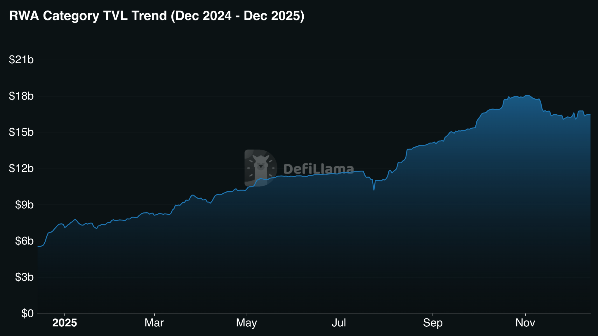
6. Ecosystem & Chain Analysis
- Ethereum: Settlement & Institutional Layer ($70.09B Base TVL)
- Solana: High-Throughput Trading Engine ($8.75B)
- Arbitrum & Optimism: EVM Execution Layers
- Base: Consumer & Retail On-Ramp
| Chain | Primary Driver | Dominant Role |
|---|---|---|
| Ethereum | Security & trust | Settlement, staking, institutional DeFi |
| Solana | Performance & cost | Trading, retail, experimentation |
| Arbitrum | Liquidity depth | Perps, leverage, advanced DeFi |
| Optimism | Ecosystem alignment | Superchain execution |
| Base | Distribution & UX | Retail, stablecoins, consumer apps |
7. Risks, Lessons, and What 2025 Changed
7.1 What Broke (and Why)
- Leverage Amplification via LRTs
- Liquidity-Driven Depegs
- Incentive-Driven Capital Fragility
- Risk Opacity in Automated Systems
- Correlated Collateral Assumptions
7.2 What Held (and Why It Mattered)
- Automated Liquidation Systems
- Over-Collateralized Lending Models
- Infrastructure Stability Under Stress
- Market-Based Risk Repricing
- Protocol-Level Adaptation
7.3 Design & Capital Allocation Lessons
- Yield Compression Is Structural
- Automation Outperformed Discretion
- Simplicity Beat Composability Under Stress
- Execution Layers Matter More Than Monoliths
- Capital Became More Selective
7.4 What 2025 Set Up for 2026
- Consolidation Over Proliferation
- Modular Financial Stacks
- On-Chain Fixed Income Emergence
- Automation as Default Infrastructure
- Risk Migration, Not Elimination
8. Executive Summary & Outlook
DeFi in 2025 transitioned from rapid experimentation to structural maturation.
Key Takeaways:
- DeFi Demand Proved Durable
- Yield Became Real and Compressed
- Leverage Was the Primary Risk Vector
- Infrastructure Held Under Stress
- Execution Layers Specialized
- RWAs Anchored Institutional Capital
What 2025 Changed:
- DeFi is no longer constrained by infrastructure, but by risk design
- Automation outperformed discretionary management at scale
- Simpler structures proved more resilient than deeply composable stacks
- TVL alone lost relevance as a success metric without flow quality
Outlook for 2026:
DeFi enters 2026 positioned for refinement, not reinvention. If 2021 proved DeFi was possible, and 2023–2024 proved it was resilient, 2025 proved it can operate as a real financial system under stress.